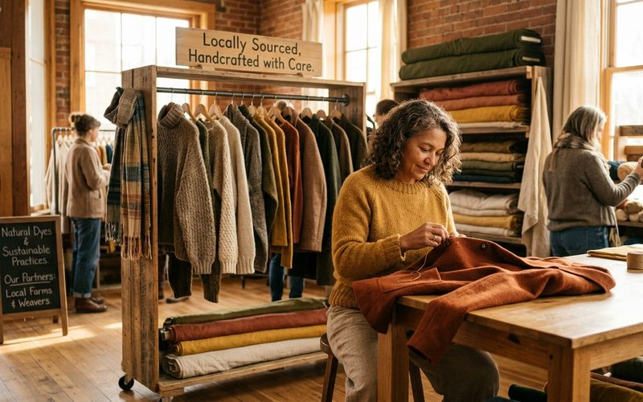

Quando você compra em um brechó no Savassi, o dinheiro não some numa cadeia de distribuição global para abastecer acionistas em outro continente. Ele fica aqui: paga o aluguel de um espaço no bairro, remunera a pessoa que fez a curadoria, retorna à consignante que vai usá-lo para renovar o próprio guarda-roupa ou pagar uma conta. A moda circular, ao contrário do fast fashion baseado em produção global, tem uma dimensão econômica local que raramente é discutida, e que é profundamente positiva para comunidades como a do Savassi em Belo Horizonte.
Entender essa dimensão econômica transforma a escolha pelo brechó de uma decisão individual e ambiental em um ato de engajamento comunitário. Você não está apenas comprando roupa, está participando ativamente de um sistema econômico mais justo e mais próximo.
Em economia, existe o conceito de "multiplicador local": quando você gasta R$100 num negócio local, uma parte significativa desse valor circula novamente na economia local, o comerciante paga fornecedores locais, funcionários que moram no bairro, serviços contratados na região. Em comparação, quando o mesmo valor é gasto em grandes redes de varejo, uma parcela muito menor permanece circulando localmente, pois grande parte vai para centros de lucro distantes.
O brechó de curadoria opera dentro desse sistema multiplicador com eficiência particular: as consignantes são, em sua maioria, moradoras da região. O espaço físico está no bairro. Os serviços de apoio, costureira, lavanderia, contador, são contratados localmente. Cada compra feita no Outra Vez é uma contribuição concreta para a vitalidade econômica do Savassi.
Para muitas mulheres, a consignação representa uma fonte de renda complementar significativa. Roupas que estão paradas no armário têm valor latente, e o brechó é o mecanismo que transforma esse valor em dinheiro real. Em momentos de pressão orçamentária, a possibilidade de consignar peças de qualidade e receber 50% do valor de venda é uma alternativa concreta e digna, que não envolve plataformas de aplicativos de megaempresas ou taxas abusivas.
Há também um impacto na cadeia de costureiras e ateliês locais. Peças que precisam de ajustes antes da consignação, uma bainha, um botão, um reparo, geram demanda para profissionais de costura que muitas vezes trabalham de forma independente. Cada reparo feito numa costureira do bairro é mais um elo da cadeia econômica local fortalecido.
A moda circular não é apenas boa para o meio ambiente e para o estilo pessoal, ela é boa para o tecido econômico da comunidade onde acontece. No Savassi, com sua concentração de negócios independentes, criadores locais e cultura de consumo consciente, esse efeito é especialmente visível. Cada visita ao Brechó Outra Vez é, nesse sentido, muito mais do que uma compra. É uma escolha sobre que tipo de economia você quer fortalecer.